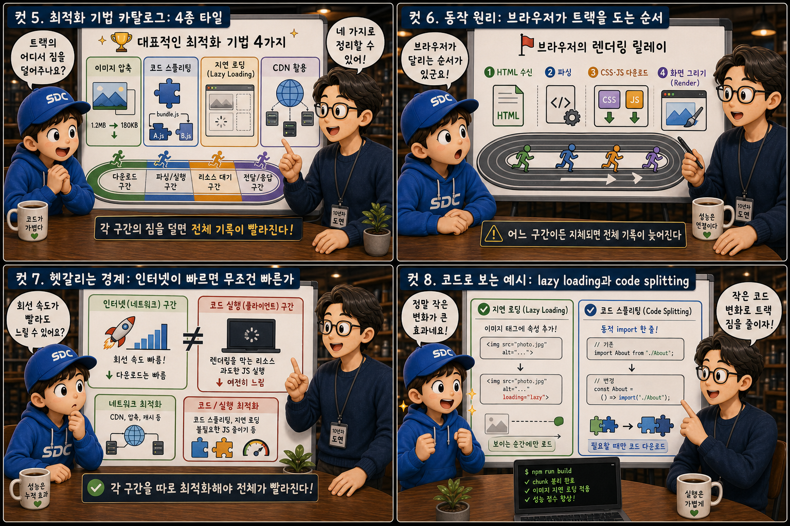
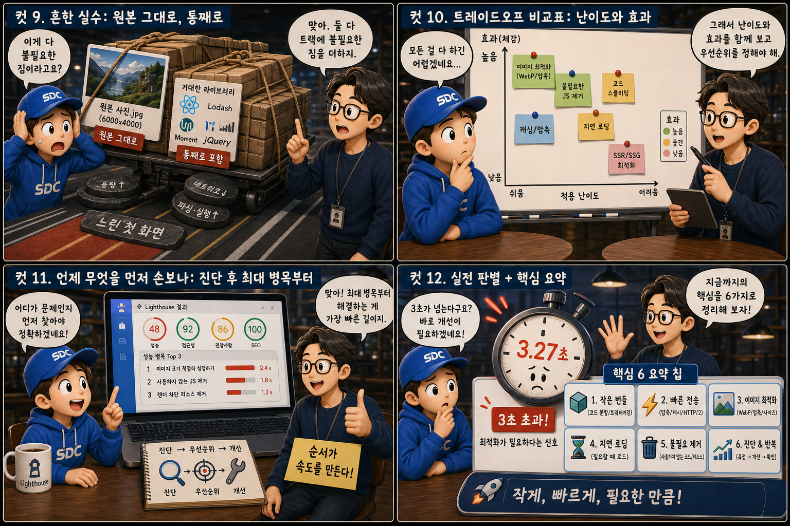

릴레이 경주 트랙에 비유해, 무엇이 웹을 느리게 만들고 어떻게 가볍게 만드는지 12컷으로 풀어봅니다.
Fast LanevsHeavy Load
사용자는 3초를 기다려주지 않는다는 말이 있습니다. 빠른 인터넷 회선이 있어도 페이지 자체가 무겁고 비효율적이면 사용자는 여전히 로딩 화면 앞에서 발을 구릅니다. 이 글은 웹 성능이라는 주제를 하나의 릴레이 경주 트랙에 비유해 풀어봅니다. 가벼운 주자는 결승선을 향해 경쾌하게 내달리고, 짐을 짊어진 주자는 압축되지 않은 이미지와 두꺼운 스크립트 뭉치에 짓눌려 비틀거립니다. 이 트랙 위에서 무엇이 병목을 만들고, 그 짐을 어디서부터 덜어낼 수 있는지 12컷으로 하나씩 확인해 보겠습니다.
PART 1 / 3 — 정의와 비교 (컷 01–04)
fourcut-01 — 컷 01 ~ 04
컷 01
이 경주를 느리게 만드는 것은 무엇인가
빠른 인터넷 회선이 있어도 페이지 자체가 무겁다면 사용자는 여전히 기다린다.
아이보리색 트랙 위, 라임 그린 유니폼을 입은 주자는 가볍게 결승선을 향해 질주합니다. 그 뒤 레인에서는 레드 오렌지 유니폼의 주자가 압축되지 않은 사진과 두꺼운 스크립트 두루마리가 담긴 상자 더미를 등에 짊어진 채 비틀거리고, 트랙 상공의 스톱워치는 3을 가리키며 붉게 깜빡입니다. 웹 성능은 단순히 “인터넷이 빠른가”의 문제가 아닙니다. 같은 회선 속도라도 페이지가 짊어진 이미지, 스크립트, 렌더링 작업의 무게에 따라 체감 속도는 완전히 달라집니다. 이 시리즈는 그 무게를 어디서 줄일 수 있는지 단계별로 살펴봅니다.
컷 02
정의부터 명확히: 성능이란 무엇을 재는가
핵심은 “로딩이 끝났다”가 아니라 “사용자가 쓸 수 있게 됐다”는 순간이다.
LOADED
화면에 콘텐츠가 보이는 순간
INTERACTIVE
클릭에 실제로 반응하는 순간
performance, defined
트랙 출발선에는 총 대신 초시계가 세워져 있고, 결승선까지 이어진 점선 화살표 위에는 “화면에 뭔가 보임”, “콘텐츠가 완성됨”, “클릭에 반응함”이라 적힌 체크포인트 깃발이 차례로 꽂혀 있습니다. 관중석의 사용자는 손목시계를 초조하게 들여다봅니다. 웹 성능이란 사용자가 콘텐츠를 인지하고, 필요한 정보를 확인하고, 버튼이나 링크에 반응할 수 있게 되기까지 걸리는 시간을 최소화하는 작업입니다. 단순히 서버 응답이 끝나는 시점이 아니라, 사람이 실제로 페이지를 “쓸 수 있게” 되는 시점을 기준으로 삼아야 정확한 성능을 측정할 수 있습니다.
컷 03
나란히 비교: 무거운 주자 vs 가벼운 주자
최적화 안 된 페이지는 무거운 짐으로, 최적화된 페이지는 압축·분할·지연 로딩으로 가볍게 전달한다.
트랙이 정확히 절반으로 나뉘어 왼쪽은 레드 오렌지 레인, 오른쪽은 라임 그린 레인으로 표시됩니다. 왼쪽 주자는 원본 해상도 사진이 그대로 붙은 거대한 액자와 두꺼운 코드 두루마리 뭉치를 지고 뒤뚱거리며, 발밑에는 render-blocking이라 쓰인 표지판이 넘어져 있습니다. 오른쪽 주자는 압축 아이콘이 그려진 작은 배낭 하나만 메고, 필요한 구간에서만 열리는 게이트를 지나 가볍게 나아갑니다. 최적화되지 않은 페이지는 원본 크기의 이미지, 압축되지 않은 번들, 화면 렌더링을 막는 스크립트를 그대로 전달합니다. 반면 최적화된 페이지는 같은 콘텐츠를 압축하고 필요한 만큼만 나누어 보내며, 화면을 막지 않는 순서로 리소스를 불러옵니다. 결과물은 같아 보여도 사용자가 체감하는 속도는 크게 달라집니다.
컷 04
권위 있는 정의: Core Web Vitals 3대 지표
구글이 정의한 Core Web Vitals는 성능을 감이 아니라 세 가지 수치로 측정한다.
트랙 상공에 인증카드 형태의 배지 세 개가 나란히 떠 있습니다. 첫 번째는 사진 프레임 아이콘과 함께 LCP — Largest Contentful Paint, 두 번째는 손가락으로 버튼을 누르는 아이콘과 함께 INP — Interaction to Next Paint, 세 번째는 흔들리는 카드 아이콘과 함께 CLS — Cumulative Layout Shift라 적혀 있습니다. LCP는 가장 큰 콘텐츠가 화면에 그려지는 시간(기준 2.5초 이내), INP는 사용자 입력에 화면이 반응하는 속도(기준 200ms 이내), CLS는 레이아웃이 얼마나 갑자기 밀리는지(기준 0.1 이하)를 나타냅니다. 세 지표 모두 사람이 실제로 느끼는 불편함을 수치화하려는 목적으로 설계되었습니다.
PART 2 / 3 — 기법과 동작 원리 (컷 05–08)

fourcut-02 — 컷 05 ~ 08
컷 05
최적화 기법 카탈로그: 4종 타일
대표적인 최적화 기법은 이미지 압축, 코드 스플리팅, 지연 로딩, CDN 활용 네 가지로 정리할 수 있다.
관중석 벽에 네 개의 타일이 2x2로 나란히 걸려 있습니다. 이미지 압축은 큰 사진이 집게에 눌려 작아지는 타일로, 코드 스플리팅은 두꺼운 코드 두루마리가 여러 조각으로 갈라지는 타일로, Lazy Loading은 결승선 근처에서만 펼쳐지는 접이식 배너 타일로, CDN 활용은 트랙 주변에 세워진 여러 중계소 탑 타일로 그려집니다. 이미지 압축은 화질 손실을 최소화하면서 파일 용량을 줄이는 작업이고, 코드 스플리팅은 하나의 거대한 번들을 필요한 조각으로 나누는 작업입니다. 지연 로딩은 화면에 보이기 직전까지 리소스 요청을 미루는 방식이며, CDN은 사용자와 물리적으로 가까운 서버에서 리소스를 전달해 네트워크 지연을 줄입니다. 네 기법은 서로 다른 구간의 병목을 각각 해결합니다.
컷 06
동작 원리: 브라우저가 트랙을 도는 순서
HTML 수신 → 파싱 → CSS/JS 다운로드 → 렌더링. 어느 구간에서든 지체되면 전체 기록이 늦어진다.
HTML 수신→HTML 파싱→CSS/JS 다운로드→렌더링
트랙이 네 개의 배턴 구간으로 나뉘고, 라임 그린으로 빛나는 배턴이 손에서 손으로 전달됩니다. 첫 구간에서 주자는 종이 두루마리(HTML)를 받아 들고, 둘째 구간에서 그 두루마리를 펼쳐 DOM 나무 모양으로 접습니다. 셋째 구간에서는 주자가 도중에 멈춰 서서 배달 상자(CSS/JS)를 받는데, 이 지점에 레드 오렌지 경고 삼각형이 표시되어 병목 가능 지점임을 알립니다. 넷째 구간에서는 결승선 앞에서 캔버스에 그림을 완성합니다. 브라우저는 HTML을 받으면 이를 파싱해 DOM 트리를 만들고, 그 과정에서 마주치는 CSS와 JS 파일을 추가로 내려받으며, 이 리소스들이 준비되어야 화면을 실제로 그립니다. 특히 CSS와 JS를 내려받는 구간에서 렌더링이 멈추는 경우가 많아, 이 구간이 병목의 가장 흔한 발생 지점입니다.
컷 07
헷갈리는 경계: 인터넷이 빠르면 무조건 빠른가
회선 속도가 빨라도 렌더링을 막는 리소스나 과도한 JS 실행이 있으면 페이지는 여전히 느리다.
트랙 위 두 주자는 똑같이 라임 그린 신발(빠른 회선)을 신고 있습니다. 그런데 왼쪽 주자는 무거운 JS 실행 엔진 모양의 배낭을 메고 있어 다리가 후들거리고, 머리 위에는 “인터넷은 빠른데 왜 느리지?”라는 물음표가 떠 있습니다. 발밑에는 render-blocking script 표지판이 트랙을 가로막듯 눕혀져 있습니다. 빠른 인터넷 회선은 파일을 빨리 전달해줄 뿐, 그 파일을 처리하는 브라우저의 작업량까지 줄여주지는 않습니다. 화면을 그리기 전에 반드시 처리해야 하는 렌더링 차단 리소스나, 다운로드 후에도 오래 실행되는 무거운 자바스크립트는 회선 속도와 무관하게 페이지를 느리게 만듭니다. 네트워크 최적화와 코드 실행 최적화는 서로 다른 문제로 각각 접근해야 합니다.
컷 08
코드로 보는 예시: lazy loading과 code splitting
Lazy Loading — 결승선 근처에서만 펼쳐지는 배너
<!-- 화면에 보이기 직전까지 다운로드를 미룬다 -->
<img src="photo.jpg" loading="lazy">
Code Splitting — 필요한 구간에서만 열리는 상자
// 실제로 필요한 시점에만 내려받는다const Chart = () => import('./Chart.js');
작은 코드 변화가 트랙 구간의 짐을 실제로 줄인다.
<img loading="lazy"> 속성을 추가하면 브라우저는 해당 이미지가 화면에 보이기 직전까지 다운로드를 미룹니다. 동적 import() 문을 사용하면 번들러가 해당 모듈을 별도 파일로 분리해, 그 기능이 실제로 필요한 시점에만 내려받습니다. 표지판 사이 트랙 위에는 짐을 내려놓고 가벼워진 주자가 웃으며 지나갑니다. 두 방식 모두 처음 화면을 그리는 데 필요한 리소스의 양을 줄여 초기 로딩 속도를 개선합니다.
PART 3 / 3 — 실수, 우선순위, 그리고 요약 (컷 09–12)

fourcut-03 — 컷 09 ~ 12
컷 09
흔한 실수: 원본 그대로, 통째로
사진을 원본 해상도 그대로 올리는 것과 라이브러리 전체를 통째로 포함시키는 것, 둘 다 불필요한 짐이다.
⚠ 원본 해상도 그대로, 라이브러리 통째로
촬영 원본 해상도(4000x3000, 8MB) 그대로 올린 사진과, 필요한 함수 1개를 쓰려고 200개짜리 라이브러리 전체를 불러오는 실수는 트랙 위 주자에게 불필요한 짐을 얹는 것과 같습니다. 화면에 필요한 크기보다 훨씬 큰 용량을 사용자가 그대로 내려받고, 실제로 쓰지 않는 코드까지 다운로드하고 실행 준비를 해야 합니다.
✓ 압축된 사이즈, tree-shaking된 조각
이미지는 화면에 필요한 크기로 압축하고, 라이브러리는 실제로 쓰는 부분만 골라내는(tree-shaking) 것이 원칙입니다. 두 실수 모두 필요한 만큼만 전달한다는 최적화의 기본 원칙을 어긴 사례입니다.
경고 부스 지붕 위 느낌표 아이콘이 레드 오렌지색으로 반짝이고, 그 앞을 지나가는 주자는 짐 무게에 눌려 휘청입니다. 부스 옆에는 올바른 크기의 압축 사진과 필요한 부분만 골라낸 상자 아이콘이 작게 대비되어 놓여 있습니다.
컷 10
트레이드오프 비교표: 난이도와 효과
모든 최적화 기법이 같은 노력으로 같은 효과를 내는 것은 아니다. 난이도와 체감 효과를 함께 따져야 한다.
어떤 기법이 더 남는 장사인가
기법
적용 난이도
체감 효과
이미지 압축
쉬움 (배턴 1개)
크게 눈에 띔
코드 스플리팅
다소 복잡 (배턴 2~3개)
대형 애플리케이션일수록 큼
CDN 활용
설정만 하면 됨 (배턴 1개)
네트워크 거리에 따라 다름
캐싱
중간 (배턴 2개)
재방문 시 극대화
이미지 압축은 상대적으로 적용이 쉬우면서도 체감 효과가 크기 때문에 대부분의 프로젝트에서 가장 먼저 시도할 만한 기법입니다. 코드 스플리팅은 번들 구조를 재설계해야 해 난이도가 높지만 대형 애플리케이션에서는 효과가 큽니다. CDN과 캐싱은 설정 위주의 작업이며, 특히 캐싱은 재방문 사용자에게 체감 효과가 극대화됩니다.
컷 11
언제 무엇을 먼저 손보나: 진단 후 최대 병목부터
Lighthouse 같은 진단 도구로 병목 구간을 먼저 찾고, 가장 큰 병목부터 손보는 것이 순서다.
🔦 진단으로 확인할 것
Lighthouse Performance 점수
LCP · INP · CLS 수치
어떤 구간이 가장 붉게 표시되는가
🎯 손볼 순서 정하기
점수가 가장 낮은 항목부터
렌더링 차단 리소스 우선 정리
수정 후 다시 진단해 재확인
심판탑 위 등대 모양의 진단 장치 “Lighthouse”가 트랙의 네 구간을 차례로 훑습니다. 탐조등이 셋째 구간(CSS/JS 다운로드)을 비추자 그 구간 전체가 레드 오렌지로 강하게 빛나며 가장 큰 병목임을 드러내고, 점수판에는 “Performance: 42”라는 낮은 점수가 붉게 표시됩니다. 코치는 셋째 구간을 가리키며 “가장 붉은 곳부터”라고 말합니다. Lighthouse와 같은 진단 도구는 페이지를 실제로 분석해 어떤 구간이 가장 큰 지연을 일으키는지 점수와 함께 알려줍니다. 모든 최적화 기법을 동시에 적용하기보다, 진단 결과에서 가장 낮은 점수를 받은 항목부터 손을 대는 것이 효율적입니다.
컷 12
실전 판별 + 핵심 요약
첫 화면이 뜨는 데 3초가 넘게 걸린다면, 그것이 바로 최적화가 필요하다는 신호다.
결승선 앞 커다란 스톱워치의 바늘이 3초를 살짝 넘긴 지점에서 멈춰 있고, 그 위에는 “첫 화면이 뜨는 데 3초가 넘는가?”라는 질문이 적혀 있습니다. 사용자가 첫 화면을 보기까지 3초 이상 걸린다면 이탈 가능성이 크게 높아진다는 것이 여러 조사에서 반복적으로 확인된 경험칙입니다. 결국 빠른 웹은 회선이 아니라 짐을 얼마나 덜어냈는가의 문제입니다.
성능 = 대기 시간 최소화LCP · INP · CLS이미지 압축 · 코드 스플리팅필요한 순간에만 로딩진단 먼저, 최대 병목부터회선보다 코드가 문제일 수 있다
가벼운 주자가 이기는 경주
웹 성능은 대기 시간을 최소화하는 목표 아래, Core Web Vitals로 측정하고, 이미지 압축과 코드 스플리팅 같은 도구로 개선하며, 진단 도구로 가장 큰 병목부터 우선순위를 정하는 과정입니다. 빠른 신발보다 가벼운 배낭이 결승선을 더 먼저 통과하게 만듭니다.